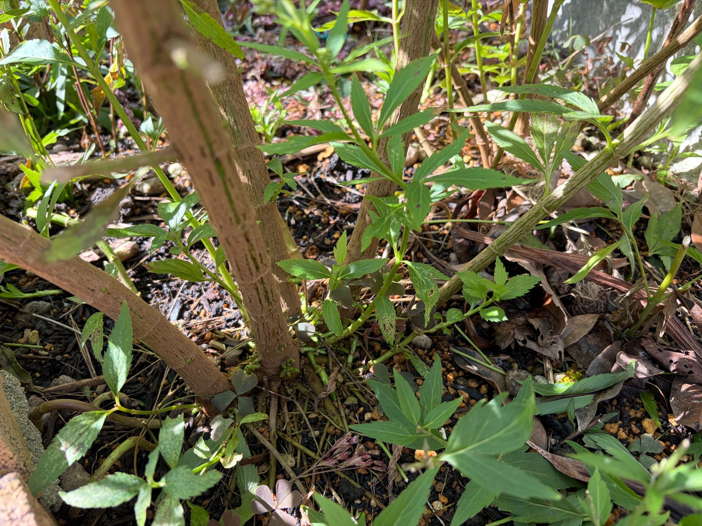

春に植えた一株が、太い茎を何本も伸ばしました
白フジバカマ（原種系）の花が咲き終わり、今回は根元の様子を残しておくことにしました。
庭の中でも一番日当たりのよい場所に、今年の春、園芸店で購入した苗を一株植えました。その一株がかなり大きく育ち、秋には白い花を咲かせ、庭に最初に飛来したアサギマダラを迎えてくれました。
10月17日には満開の白い花房にアサギマダラがとまる姿を記録しましたが、花の時期を終えた今、足元にも目を向けてみました。花や葉が茂っている間は目立たなかった太い茎が、根元では何本もまとまって立ち上がっています。春に植えた苗の小ささを思うと、ひとシーズンでずいぶんしっかりした株になったと感じます。
根元の茎は褐色になり、縦の筋が目立っています
株元から伸びた茎は、下のほうほど太く、表面が茶色から灰褐色になっています。真っすぐ上へ向かうものもあれば、根元から斜めに広がるものもあり、それぞれの茎が場所を取りながら大きな株を形づくっています。
太い茎の表面には細かな縦筋が走り、少しざらついたような質感が見られます。柔らかな緑色の茎とは違い、花の咲く大きな株を支えてきた、硬そうな姿になっています。
ただ、茎全体が同じ色に変わっているわけではありません。褐色の表面のところどころに緑色の筋が残り、特に斜めに伸びる茎では、緑と茶色が縦に入り交じっています。花が終わったからといって、地上部のすべてが一度に枯れた姿になるわけではなく、根元にもまだ緑が残っています。
地際の太い茎に、緑色の小さな突起が集まっています
根元で特に目に留まったのは、太い茎の地面に近い部分についている、小さな緑色の粒のようなものです。
褐色になった茎の表面から、黄緑色の丸い突起がいくつも顔を出しています。ひとつずつ離れているものもあれば、数個が寄り集まり、小さなかたまりになっているものもあります。位置も一か所だけではなく、地際に近い部分を中心に、少し上にも点々と見られます。
丸みのあるもの、先が少しとがって見えるもの、わずかに伸びたようなものがあり、大きさや形はそろっていません。茶色い茎についているので、小さくても鮮やかな緑色がよく目立ちます。
芽のようにも見えますが、まだ葉の形がはっきりしていないものもあり、この段階では、これから茎葉になる芽なのか、根につながる部分なのかまでは分かりません。今は、太く育った茎の地際に、小さな緑色の突起がまとまって現れている様子として残しておきます。
花を咲かせ終えた株の足元で、こうした小さな変化が見られることに、あらためて目が向きました。

茎の下のほうにも、緑の葉をつけた枝が残っています
太い茎の低い位置には、細い緑色の枝が伸び、葉をつけているところもあります。上へ向かう太い茎と、その脇から伸びる細い枝では、色も太さもずいぶん違います。
低い位置の葉には、縁のぎざぎざや葉脈が見え、緑色を保っているものがあります。一方で、小さな穴が開いた葉や、一部分が茶色く傷んだ葉も見られます。根元近くにも、まだ緑を残す部分と、傷みの進んだ部分が混在しています。
花が終わると株全体の役目も終わったように感じてしまいますが、足元を見ると、茎の脇に残る葉や、地際の小さな突起など、それぞれ違った姿が見られます。花房の変化とは別に、根元でも季節の移り変わりが進んでいるように感じます。
茎が集まる地際には、落ち葉や細い枯れ茎が重なっています
太い茎の間や周囲には土が見え、その上に細い枯れ茎や茶色い落ち葉が重なっています。茎が立ち上がる位置には高低があり、地面との境目がよく見えるところもあれば、落ち葉などに隠れているところもあります。
根元の太さは、地面すれすれまで続いています。細い一本の茎が立っているというより、太くなった茎が近い位置からいくつも伸び、株の足元に厚みができています。
地上に見えている根元だけでも、今年の成長の大きさが伝わってきます。ただ、土の中の根がどのくらい広がっているかは、掘っていないので分かりません。今見えている太い茎や株元のまとまりから、地植えした後に大きく育った姿を感じています。
花を終えた後も、根元の変化を残していきたいです
今年は、一番日当たりのよい場所に植えた一株が大きく育ち、白い花を咲かせ、最初のアサギマダラを迎える株になりました。日当たりのよさも、生育を支える条件の一つになったのかもしれません。
花の季節には、どうしても上の花房や、そこに訪れる蝶に目が向いていました。咲き終わってから根元を見ると、太く褐色になった茎、表面に残る緑色、地際の小さな突起など、花とは違う見どころがあります。
特に気になるのは、根元に集まっている緑色の小さな突起です。このままの形で冬を迎えるのか、少しずつ伸びて形が分かるようになるのか。花を終えた一株の足元を、これからも見ていきたいと思います。